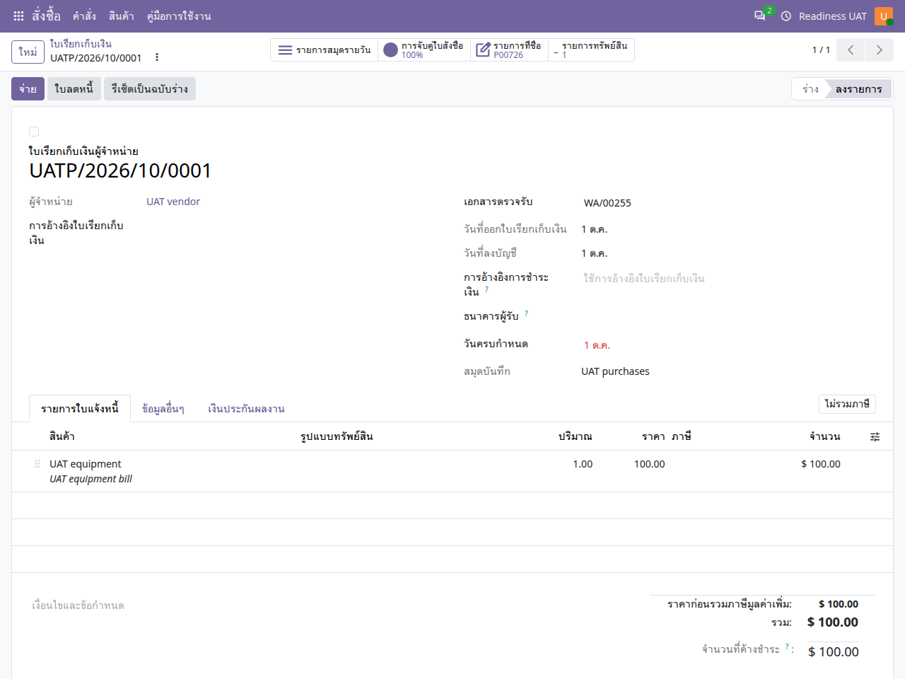

คู่มือการใช้งาน
ออกใบแจ้งหนี้และการเงิน
ตรวจใบเรียกเก็บเงิน ลงบัญชี และติดตามการใช้จริงจากคำขอซื้อ ใบสั่งซื้อ หรือสัญญา
ไม่พบข้อความ ลองใช้คำอื่นหรือล้างคำค้นหา
เริ่มใช้งานและอ่านหน้าจอ
เปิดแอปจากเมนูหลัก แล้วเลือก คู่มือการใช้งาน คู่มือเปิดในแท็บใหม่เพื่อให้ดูพร้อมหน้าทำงานได้ เลือกแอปอื่นจากรายการด้านซ้าย หรือค้นหาคำในคู่มือนี้ และใช้ปุ่มพิมพ์ / บันทึก PDF เมื่อต้องการสำเนา
- ตรวจบริษัทที่มุมขวาบนและหน่วยงานในเอกสารก่อนสร้างหรืออนุมัติ เมนูและปุ่มขึ้นกับสิทธิ์ของบัญชี
- หลังแก้ข้อมูล ให้ใช้ปุ่มบันทึก / ไอคอนบันทึกตามที่แบบฟอร์มแสดง แล้วตรวจสถานะและเลขเอกสารก่อนออกจากหน้า
- ภาพประกอบเป็นข้อมูลจำลอง ชื่อรายการ ภาษา หรือเลขเอกสารอาจต่างจากบัญชีของคุณ ตัวเลขในภาพไม่ใช่ค่าที่ต้องกรอก
- ข้อความผิดเงื่อนไขให้จดเลขเอกสารและข้อความที่แสดง ส่งให้ผู้รับผิดชอบงานตรวจ อย่าส่งรหัสผ่านหรือข้อมูลเข้าสู่ระบบ
- ถ้าคู่มือเปิดแล้วภาพหรือภาษาเก่าค้าง ให้บันทึกงานในหน้าระบบก่อน แล้วรีเฟรชแท็บคู่มือ
เข้าใจต้นทางก่อนลงบัญชี
- เอกสารต้นทาง
- ตรวจรับ / งวดตามเงื่อนไข
- ใบเรียกเก็บเงินร่าง
- ลงบัญชี
- ชำระ / ลดหนี้ / กระทบยอด
ใบเรียกเก็บเงินหนึ่งรายการต้องอ้างแหล่งใช้จ่ายให้ถูกต้อง บรรทัดเดียวไม่ควรรับทั้งแหล่งใบสั่งซื้อและแหล่งสัญญาพร้อมกัน การลงบัญชีมีผลกับยอดใช้จริง
ตรวจใบเรียกเก็บเงินผู้ขาย
ออกใบแจ้งหนี้ → ผู้ขาย → ใบเรียกเก็บเงิน
- เปิดเอกสารที่สร้างจากต้นทางหรือสร้างตามหน้าที่ ตรวจผู้ขาย บริษัท สมุดรายวัน เลขอ้างอิง และวันที่
- ตรวจสกุลเงิน อัตราแปลง ราคา ปริมาณ ภาษี และบัญชีแต่ละบรรทัด
- ตรวจลิงก์ใบสั่งซื้อ สัญญา เอกสารตรวจรับ หรืองวดที่เกี่ยวข้อง รวมทั้งมิติงบประมาณ
- บันทึกแล้วทบทวนยอดก่อนกดยืนยัน/ลงบัญชี หากมีหน้าต่างเตือนจำนวนผิดปกติ ให้อ่านและตรวจเอกสารประกอบก่อนยืนยัน

ตรวจผลหลังลงบัญชี
- ตรวจสถานะลงบัญชีและรายการสมุดรายวัน ไม่ใช้การสร้างเอกสารร่างเป็นหลักฐานว่ารับรู้ใช้จริงแล้ว
- เปิดต้นทางหรืองบประมาณเพื่อตรวจยอดที่เกี่ยวข้องและการเชื่อมโยงรายการ
- การลงทะเบียนชำระเงินหรือกระทบยอดให้ดำเนินการตามสิทธิ์และหลักฐานการรับ/จ่ายจริง
- หากพบยอดผิด ให้ตรวจเอกสารต้นทางและใช้ลดหนี้หรือการกลับรายการตามสิทธิ์ ไม่แก้ยอดประวัติจากหน้ารายงาน
ภาษี เงินมัดจำ และเงินประกันผลงาน
| งาน | สิ่งที่ตรวจ |
|---|---|
| ภาษีไทย / ภาษีหัก ณ ที่จ่าย | ใช้ข้อมูลภาษีที่ผู้ดูแลตั้งไว้และเอกสารจริง ตรวจยอดและบัญชีตามหน้าที่ ไม่มีการระบุอัตราภาษีตายตัวในคู่มือนี้ |
| เงินมัดจำจัดซื้อ | ตรวจใบสั่งซื้อ รายการมัดจำ และการนำไปใช้กับเอกสารปลายทาง ป้องกันนับใช้จ่ายซ้ำ |
| เงินประกันผลงาน / Retention | ตรวจยอดที่กัน เงื่อนไขปล่อย และเอกสารบัญชีที่เชื่อมก่อนใช้ปุ่มปล่อยเงิน |
| หลักประกันการจัดซื้อ | ใช้แอปหลักประกันการจัดซื้อสำหรับรับและคืนตามวิธีที่ตั้งไว้ |
ลดหนี้และแก้ไขรายการ
- เปิดใบเรียกเก็บเงินต้นฉบับและตรวจว่ามีการชำระ การตรวจรับ หรือการสร้างทรัพย์สินแล้วหรือไม่
- สร้างใบลดหนี้/กลับรายการจากต้นฉบับ ระบุเหตุผลและวันที่ตามกระบวนงาน
- ตรวจจำนวนที่คืนและความสัมพันธ์กับต้นฉบับก่อนลงบัญชี
- ตรวจทั้งยอดบัญชีและยอดใช้จริงงบประมาณหลังดำเนินการ ประวัติต้นฉบับยังคงอยู่
ปัญหาที่พบบ่อย
| อาการ | สิ่งที่ควรตรวจ |
|---|---|
| ลงบัญชีไม่ได้เพราะตรวจรับ | เปิดเอกสารตรวจรับและตรวจสถานะ ปริมาณ และใบสั่งซื้อที่อ้างอิง |
| แหล่งงบประมาณขัดกัน | ตรวจว่าบรรทัดนั้นเชื่อมใบสั่งซื้อหรือสัญญาเส้นทางใดเพียงเส้นทางที่ถูกต้อง |
| ยอดต่างสกุลไม่เท่ากัน | ตรวจสกุลเงินเอกสาร สกุลเงินบริษัท วันที่และอัตราที่ใช้ |
| สิทธิ์ลงบัญชีไม่พอ | ให้ผู้มีหน้าที่บัญชีดำเนินการ อ่านคู่มือไม่ได้เพิ่มสิทธิ์ให้บัญชี |
FAQ: การตั้งค่าและเปลี่ยนสกุลเงิน
ใช้ได้กับทุกแอป โดยแยกสกุลเงินบริษัทออกจากสกุลเงินเอกสาร รหัส THB (฿) คือเงินบาท และ USD ($) คือดอลลาร์สหรัฐ การเปลี่ยนภาษาเป็นไทยไม่เปลี่ยนสกุลเงินจริง
1. ต้องการใช้เงินบาททั้งระบบ ต้องตั้งที่ไหน?
ให้ผู้ดูแลที่มีสิทธิ์จัดการบริษัท เลือก การตั้งค่า → บริษัท → เปิดบริษัทที่ต้องการ → ข้อมูลทั่วไป → สกุลเงิน แล้วเลือก THB และบันทึก ควรกำหนดก่อนเริ่มตั้งค่าบัญชีและสร้างเอกสารธุรกิจ ตรวจประเทศและผังบัญชีให้ตรงกับการใช้งานด้วย ค่าเริ่มต้น THB ของชุด ERP นี้ใช้กับบริษัทใหม่ โดยบริษัทสาขาอาจรับสกุลเงินจากบริษัทแม่ และการระบุสกุลเงินอื่นอย่างชัดเจนยังมีผล
สกุลเงินบริษัทเป็นค่าหลักของงบประมาณ บัญชี และรายงานหลายประเภท เอกสารซื้อหรือรายจ่ายยังใช้สกุลเงินต่างประเทศได้ตามสิทธิ์และการตั้งค่า จึงไม่ใช่การบังคับให้เอกสารทุกฉบับแสดง ฿
2. ทำไม admin เปลี่ยนสกุลเงินบริษัทไม่ได้?
ถ้ามีข้อความว่า คุณไม่สามารถเปลี่ยนสกุลเงินของบริษัทได้ เนื่องจากมีรายการสมุดรายวันบางรายการอยู่ แสดงว่าระบบพบประวัติรายการบัญชีแล้ว ข้อจำกัดนี้ใช้กับ admin ด้วย และอาจรวมบริษัทแม่/สาขาที่เกี่ยวข้อง การมีเพียงชื่อสมุดรายวันกับการมีรายการบัญชีเป็นคนละเรื่อง อย่าลบรายการบัญชีหรือฝืนแก้ฐานข้อมูลเพื่อปลดล็อก
สำหรับการทดลอง ให้ผู้ดูแลสร้างบริษัททดลองใหม่ ตั้งประเทศและสกุลเงิน THB ก่อนเริ่มงาน เตรียมผังบัญชีและสมุดรายวัน แล้วกำหนดสิทธิ์ผู้ใช้ หน่วยงาน คลัง และข้อมูลพื้นฐานที่แอปนั้นต้องใช้ จากนั้นเลือกบริษัทใหม่ที่มุมขวาบน บริษัทและเอกสาร USD เดิมยังคงเดิม การเพิ่มบริษัทไม่ใช่การแปลงยอดหรือย้ายประวัติเดิม สำหรับการเปลี่ยนระบบใช้งานจริงต้องวางแผนย้ายยอดกับผู้รับผิดชอบบัญชี
3. แอปนี้เลือกหรือเปลี่ยนสกุลเงินตรงไหน?
ในใบแจ้งหนี้ลูกค้าหรือใบเรียกเก็บเงินผู้ขายสถานะร่าง เลือกสกุลเงินของเอกสารใกล้ส่วนยอดเงินตามสิทธิ์ แล้วตรวจสมุดรายวัน วันที่เอกสาร อัตราแลกเปลี่ยน ภาษีและยอดรวม สมุดรายวันที่กำหนดสกุลเงินเฉพาะอาจจำกัดตัวเลือก เอกสารลงบัญชีแล้วให้ผู้รับผิดชอบใช้กระบวนการกลับรายการหรือแก้ไขที่ระบบอนุญาต การรับชำระเงินใช้อีกหน้าจอหนึ่งและต้องตรวจสกุลเงินของสมุดรายวันรับจ่ายด้วย
4. ไม่พบ THB หรือไม่เห็นช่องสกุลเงิน ต้องทำอย่างไร?
ให้ผู้จัดการบัญชีตรวจที่ ออกใบแจ้งหนี้/การบัญชี → การกำหนดค่า → บัญชี → สกุลเงิน ว่า THB และสกุลเงินที่ต้องใช้เปิดใช้งานอยู่ การเปิดใช้หลายสกุลเงินและสิทธิ์ผู้ใช้อาจเป็นเงื่อนไขให้ช่องสกุลเงินปรากฏ ชื่อเมนูอาจต่างตามสิทธิ์และภาษา
ก่อนใช้เงินต่างประเทศ ให้ผู้รับผิดชอบบัญชีกำหนดอัตราแลกเปลี่ยนของบริษัทและวันที่ที่เกี่ยวข้อง ตรวจทิศทางอัตราตามที่หน้าจอแสดง ไม่ถือว่าระบบดึงอัตราให้อัตโนมัติเสมอ หากเอกสารมีอัตราที่ระบบบันทึกไว้แล้ว อัตราใหม่ไม่จำเป็นต้องแก้ยอดประวัติย้อนหลัง
5. บัญชีทดลองไม่เห็นการตั้งค่า ต้องใช้ admin เท่านั้นหรือไม่?
ขึ้นกับสิทธิ์ที่ได้รับ ไม่ใช่ชื่อบัญชี บัญชีทดลองถูกซ่อนแอปและการตั้งค่าระบบโดยตั้งใจ ให้ผู้ดูแลที่มีสิทธิ์บริษัทหรือผู้จัดการบัญชีตั้งค่าที่เกี่ยวข้องให้ ผู้ใช้งานทั่วไปเลือกสกุลเงินได้เฉพาะเอกสารที่ตนมีสิทธิ์และยังแก้ไขได้ ไม่ต้องเพิ่มสิทธิ์ผู้ดูแลระบบเพียงเพื่อเลือกสกุลเงินเอกสาร
6. เลือกบริษัท THB แล้ว ทำไมยังเห็น $?
ตรวจบริษัทที่มุมขวาบนก่อน โดยเลือกบริษัทเดียวเมื่อกำลังตรวจยอด จากนั้นตรวจบริษัทและสกุลเงินในเอกสารจริง เอกสาร USD เดิม ใบสั่งซื้อจากผู้ขายต่างประเทศ หรือข้อตกลงที่เชื่อมเอกสาร USD ยังแสดง $ ได้ตามข้อมูลจริง บันทึกงานก่อนโหลดหน้ารายงานหรือแดชบอร์ดใหม่ การเปลี่ยนบริษัทที่กำลังใช้งานไม่ย้ายบริษัทหรือแปลงเงินของเอกสารเก่า
7. เปลี่ยน USD 100 เป็น THB แล้วถือเป็น 100 บาทเลยหรือไม่?
ไม่ควรถือเช่นนั้น การเปลี่ยนช่องสกุลเงินของร่างเอกสารไม่รับประกันว่าราคาจะถูกแปลงให้ถูกต้องโดยอัตโนมัติ หลังเปลี่ยนต้องตรวจราคาต่อหน่วย จำนวน ส่วนลด ภาษี ยอดรวม และยอดสกุลเงินบริษัทอีกครั้งตามอัตราและวันที่ที่ใช้ ห้ามเปลี่ยนเพียงสัญลักษณ์ $ เป็น ฿ บนรายงาน เพราะจะทำให้เข้าใจยอดเงินจริงผิด
ก่อนยืนยันหรืออนุมัติ ตรวจ บริษัท → สกุลเงินเอกสาร → วันที่และอัตราแลกเปลี่ยน → ยอดต้นทางและยอดสกุลเงินบริษัท หากเอกสารยืนยัน ลงบัญชี หรือเชื่อมรายการปลายทางแล้ว ให้หยุดและใช้กระบวนการแก้ไขของแอปตามสิทธิ์